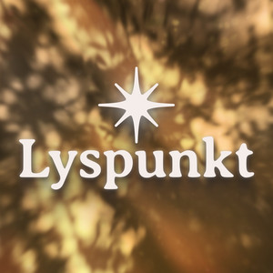

Der skal to til en samtale
Flere stærke mistrivselskampagner taler primært til den, der har det svært ("#TALOMDET", "Sig det højt"). Vi fokuserer lige så meget på dem tæt på. For ansvaret kan ikke kun ligge hos den sårbare.
baggrundsinterviews
TIDLIGERE PROJEKTER
Lyspunkt er en dokumentarisk podcast hvor mennesker, der har befundet sig i mørket, fortæller om vejen tilbage til lyset. Indlevende fortællerstemme, filmisk lyddesign og konkrete initiativer giver lytteren tro på, at forandring altid er mulig.
Udgivet afsnit · lyt til uddrag

Lyspunkt · Episode · 3:36

»Det er jo en helt vild podcast, jeg tudede flere gange undervejs, blev revet med og så glad i sidste afsnit. Wow det er en vild podcast. Tillykke ❤️«

»Hej med jer! Jeg så jeres indslag i go' morgen dk, og kæmpe cadeau! Vildt fedt initiativ. Hvis I mangler nogen deltagere til podcast, så sig til. Jeg er 25 år og fik for 2 år siden stillet en diagnose efter en fødselsdepression, men er nu i fuldt flor, og har aldrig haft det bedre end nu. Jeg brænder for at dele ud og give håb - ligesom i mit arbejde. Så sig til!«
»Jeg ELSKER jeres måde at lave podcast på! Alle lydeffekterne og vekselvirkningen mellem interview og Janus's fortælling gør det bare så levende. Grinede højt af det lille lydklip »kartoflen kom til Europa« . Så genkendelig en type film at se i en skoleklasse. Den slags små finurligheder gør jeres podcast til en af mine yndlings! Tak ❤️«

»Åh, og så tanken om at min læge seriøst er bekymret for mig, og anbefalede at lytte til denne podcast, den er faktisk god nok :)«
VORES "WHY"
Det her projekt er ikke fjernt for os. Vi har selv mærket, hvad tavshed har af konsekvenser, og hvad der sker, når man endelig får sagt det højt. Det er dér, vores tro på kampagnen kommer fra.
”Jeg har selv mærket, hvor meget det man går alene med kan vokse, når man prøver at holde fast i en facade.
I slutningen af 3.g stod jeg midt i det, der udadtil skulle være en af de bedste tider i mit liv, men indeni kæmpede jeg med selvmordstanker, selvskade og et begyndende alkoholmisbrug.
Men jeg sagde det ikke højt nok, fordi jeg ikke ville ødelægge stemningen, netop som studentertiden nærmede sig. Samtidig blev jeg nomineret til “årets solstråle” til årsoverrækkelserne, og det gjorde det absurd tydeligt for mig, hvor stor afstanden kan være mellem det, andre ser, og det man faktisk går med.
Derfor brænder jeg for den her kampagne: fordi jeg ved, hvor meget tavshed kan komme til at fylde, og hvor vigtigt det er, at vi gør det lettere at sige noget højt, før det vokser sig større.”
”Jeg har selv mærket konsekvenserne af ikke at italesætte noget, jeg gik med. Jeg havde noget i klemme i en relation til en meget god ven, men jeg kunne ikke finde ud af at åbne samtalen. Jeg var bange for konsekvenserne og meget konfliktsky, så jeg holdt det tilbage i flere år.
Hver gang vi var sammen, følte jeg, at der lå noget usagt mellem os, som jeg ikke kunne abstrahere fra. En dag fik jeg endelig åbnet op for samtalen med ham, og det føltes som en kæmpe byrde, der blev løftet fra mine skuldre.
Jeg vil ønske, at jeg havde sagt det noget før, men på trods er jeg virkelig glad for, at jeg faktisk fik det sagt.”
Lad os tale om det


LYSPUNKT PRODUCTION